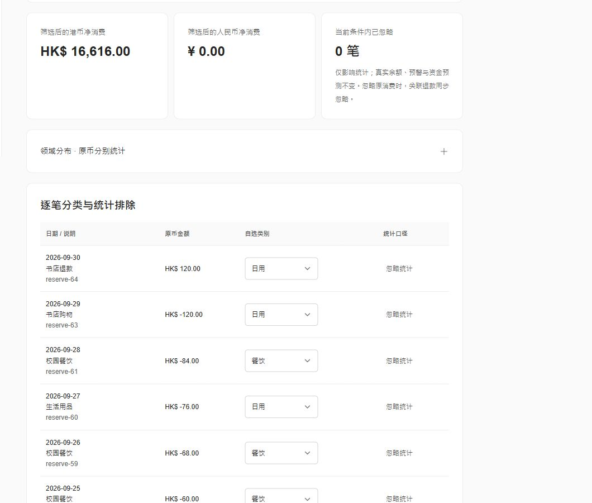
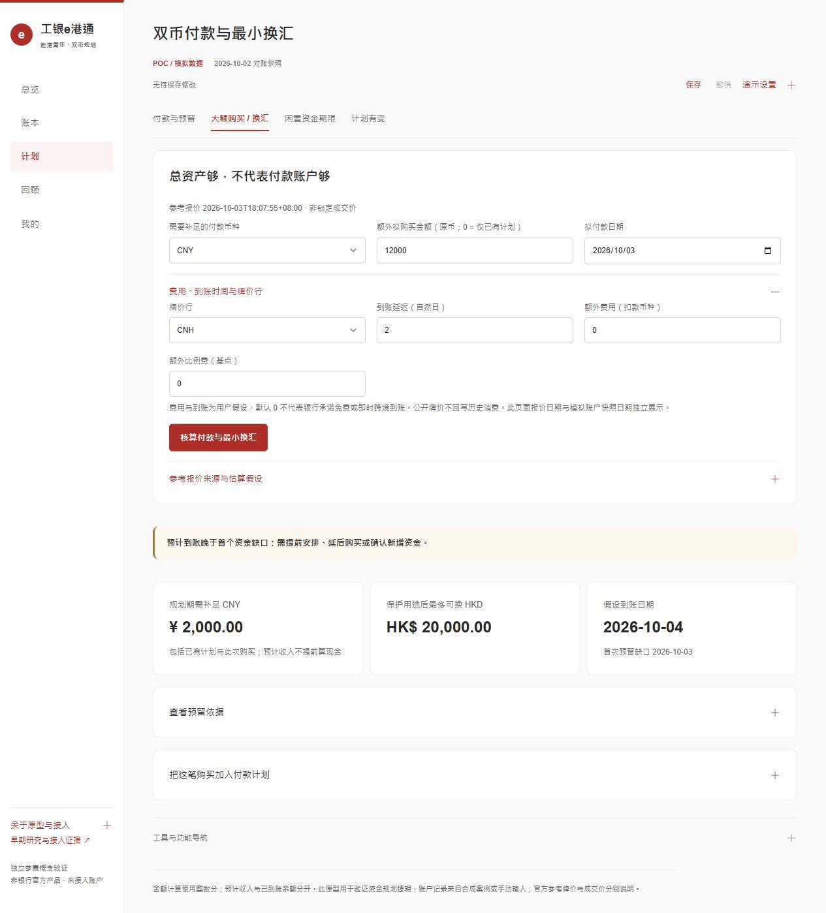

工银e港通
赴港青年双币资金管理助手
人民币—港币账务核算与跨期付款规划方案
第十七届“工行杯”全国大学生金融科技创新大赛
参赛方向：青年群体服务
2026年10月9日
本项目面向同时使用人民币与港币的赴港学生及初入职场青年，将消费记录、日常预算与未来付款安排相衔接，帮助用户核对资金去向，并判断新增支出是否会影响后续必要付款。
正文依次讨论业务问题、产品方案、数据结构、约束模型、算法与实验、银行集成及实施路径。技术结论由文内算例和可复现实验支撑；在线原型用于展示操作过程和结果解释。
本项目为独立参赛方案。涉及银行与八达通的生产接入，按文中所述合作条件实施。
目录
1 摘要
赴港学生及初入职场青年常同时持有人民币与港币，并需要统筹日常消费、学费、租金和大额购买。资金在银行账户与储值工具之间流转，使账户扣款、最终消费和可付款余额形成不同口径；必要款项提前到账，又使当前余额包含未来用途。跨币种资金管理因此需要将历史账务与付款日期共同纳入判断。
工银e港通以分类账本为基础，关联转移、充值、退款和商户消费，并将生活预算及必要付款转换为逐币种、逐日的资金路径。用户提出新增购买后，系统检查来源资金用途、目标币种缺口和兑换到账时间，在固定报价与费用条件下计算最小兑换额；受约束限制时，说明缺口及对应日期。其功能增量是将账务核对、付款规划和换汇试算衔接为连续流程。
网页原型已完成136项自动回归测试。在2,000组五日双币合成案例中，可行性判断及最小兑换额均与独立逐分枚举一致；约束消融显示，未来付款和到账时间对识别资金缺口具有实质作用。验证范围为本文定义的单次兑换模型。
方案拟作为银行渠道内的规划模块，由银行承接身份认证、授权数据、适用报价及交易复核。八达通企业数据合作用于补充香港本地消费记录。经济性以增量资金贡献、交易贡献变化与服务成本评价，风险管理覆盖模型、操作、合规与客户行为、商业与战略四类风险。
2 业务背景与问题界定
2.1 资金转移与最终消费的核算边界
赴港青年的资金常经过人民币账户、港币账户和八达通，最后用于交通、餐饮等消费。换汇改变币种，充值改变资金载体，商户支付形成最终消费。银行流水记录本账户出入，个人账本则需要进一步追踪资金用途。
例如，期初钱包余额为零，用户充值500港元后消费148元，钱包尚余352元。在个人资金口径下，充值属于内部转移，最终消费为148元；同时计入两者会重复统计。未消费的352元保留为钱包资产，其能否用于学费或租金取决于实际支付或转出渠道。
由此形成两项互补的核算要求：消费统计按经济用途归集，付款规划按日期、币种和渠道核验资金。八达通明细补充充值后的消费去向，适用于充值即时到账的情形。人民币卡直接充值时，按实际人民币扣款、港币入账及费用记录资金路径。

2.2 跨币种金额感知与预算参照
日常支付币种改变后，用户需要在港币标价、人民币预算和本地生活成本之间建立新的金额参照。已兑换的港币也可能被单独视为“在港生活资金”，影响原有预算的使用方式。
外币估值研究发现，名义金额会影响商品估值，汇率调整的充分程度受到经验与时间压力影响[1]。心理账户研究揭示了资金来源和用途分类对决策的作用[2]；支付形式研究则关注支付与消费之间联系的显著性[3]。这些研究为跨币种预算呈现提供理论依据，人民币—港币场景的具体行为效应仍需专项研究。
本方案据此保留原币金额，展示分类预算及偏差，并将新增支出与未来必要付款关联。辅助折算注明汇率和日期，历史实际成本与当前参考估值分别呈现。现阶段的评价集中于信息一致性和计算正确性；个人参照汇率、兑换批次成本及行为效果研究属于扩展范围。
2.3 付款用途与资金可用性的时序约束
学费和租金常提前到账，付款则发生在数周或数月后。当前余额因而同时承载日常开销与未来义务。若缺少日期和用途约束，同一笔资金容易被重复安排。
例如，用户持有人民币10,000元和港币20,000元，购买人民币12,000元商品仍有2,000元人民币缺口。能否动用港币补足，取决于港币已有用途、兑换费用及到账时间；月末工资也只有在到账后才能支持付款。折算总资产描述价值，逐日原币余额刻画支付条件。
本项目研究一笔新增支出在既定计划下是否可行，以及满足约束所需的最小换汇金额。用途预留是用户设定的计算与预警规则，银行账户支取权限仍由银行管理。
2.4 目标客群与研究范围
首期面向同时使用人民币与港币的赴港学生及初入职场青年。学费、租金、入职押金和首薪衔接构成连续场景，共同特征是必要付款日期明确、资金来源与支出时点错开。
研究范围包括账务口径一致性、用途与日期约束下的资金可用性，以及固定报价下单次兑换的最小金额。消费记录提供核算基础，付款计划与报价共同决定规划结果。
3 市场定位与既有服务比较
3.1 目标客群与市场范围
UGC《2025年资料册》列示，2024/25年度资助课程非本地学生超过26,600人。该数字说明校园服务的客群基础；本方案的可服务人数还取决于双币需求、渠道触达、自愿授权及持续使用情况。
校园阶段集中于学费、房租和生活费安排，毕业后延伸至租赁押金、首薪及两地资金管理。产品以这些资金任务界定客群，并通过银行现有校园及跨境服务渠道导入。
资料来源：UGC资料册。
3.2 工商银行现有记账与收支分析功能
工商银行已有账户明细、收支分析和月度账单服务。工银灵通账户卡官方介绍列有明细查询及电子银行月度账单分析；2026年4月系统维护公告列出收支分析、客户收支明细等服务。2026年6月16日生效的融e行隐私政策进一步说明，用户可在收支明细备注中上传照片。上述资料确认了账户记录、收支整理和交易信息补充的既有基础。
从产品沿革看，工行“个人财务分析软件”已覆盖收支记账、资产负债、财务统计、预算、手工账户及计划提醒，并采用T+1联机数据和前一日汇率估值。这些历史能力体现工行长期开展个人财务管理服务的积累；当前手机银行的具体分类与筛选规则仍应以实际版本为准。
本方案沿用记账和预算基础，重点研究账务数据如何参与下一笔付款判断：将充值与消费关联，将统计口径与现金流分开，并联合必要付款、原币余额和到账日期求解可安排资金。比较依据限于公开产品资料，实验则针对本方案自建模型开展。
资料来源：工银灵通账户卡；2026年系统维护公告；融e行隐私政策，第一部分第（一）项第3款第（13）目；个人财务分析软件介绍；工行早期《财富生活》资料。
3.3 内地与香港渠道的功能及数据边界
内地工商银行与工银亚洲分属不同服务渠道。工银亚洲e账通提供两地账户相关查询，工银财富账户及货币买卖提供香港渠道服务基础。正式适配须分别确认账户授权、交易权限和跨境通道。
用途管理方面，工行智能资产配置涉及资金目标、期限与配置条件；工银亚洲智安存按其业务规则提供资金锁定。本方案的用途预留用于规划计算，与实际冻结资金分别记录，使用户自主保留金额和银行可用余额共同参与判断。
资料来源：工银亚洲e账通；工银财富账户；智能资产配置；工银亚洲智安存。
3.4 本方案的功能增量与适用范围
| 既有服务基础 | 本方案补充的处理 | 可验证的结果 |
|---|---|---|
| 账户明细与收支整理 | 关联银行转移、钱包充值及最终消费；保留原币与来源 | 充值本金不重复计入消费，缺失覆盖可识别 |
| 分类分析、用户备注及预算能力 | 将统计口径与真实现金流分离 | 忽略统计或更改类别不改变账户余额和付款约束 |
| 账户查询与资金目标管理 | 将学费、租金、生活预算及应急金纳入逐日原币路径 | 区分当前余额、用途预留及完整规划可安排额 |
| 货币买卖与交易复核 | 联合检查来源资金用途、目标币种缺口及可用日期 | 给出最小兑换额及少一分不足的验算，或说明不可行原因 |
增量验证围绕上述结果开展，第10章以相同输入下的约束消融和独立枚举检查模型。
4 产品方案与业务流程
4.1 用户任务与业务流程
用户先核对余额、分类及转移记录，再按需登记学费、租金、应急底线与付款日期。提出大额购买后，系统计算缺口、可换上限和最小兑换额。日常记账与付款规划可分别使用：首页呈现可安排资金、近期付款和待核对事项，详细依据按需展开。
4.2 功能模块与职责
账本支持模拟账户、遮罩卡号、手动录入、记录导入、组合筛选、统计排除和退款关联。原币余额随实际交易变化，分类和筛选用于消费分析。
规划功能支持双币用途、生活预算、应急底线及重复付款。购买试算综合金额、费用和到账日期，给出可行结果或约束原因，并支持保存计划。
持续管理包括规则月报、预算偏差、撤销、备份及八达通核对。期限容量分析与银行宿主适配为后续服务衔接提供基础。
4.3 规划结果解释与情景调整
结果同时说明金额与条件。例如：“需补人民币2,000元，参考需换出港币2,353.98元”，附报价时间、费用和受保护用途。遇到来源资金不足或到账晚于付款，系统定位相应日期，供用户调整金额、时间或资金安排。修改计划后重新计算，交易执行前再由银行核价和复核。
5 系统架构与模块划分
5.1 系统分层与模块职责
系统由账务、规划、求解和交互四个模块构成。账务模块校验记录并生成原币余额；规划模块组织逐日现金流与用途约束；求解模块计算可行性及最小兑换额；交互模块解释结果并支持计划修改。
外部账户与报价通过适配层输入。计算核心可在浏览器内重算，服务器负责网页分发和公开参考报价服务。这样的职责划分便于独立验证算法，也便于调整银行渠道的界面与数据接口。
5.2 确定性计算的技术依据
资金规划需要结果可重复、金额可核对、限制条件可解释。核心计算因此采用整数金额与确定性规则，将费用舍入、用途保护和日期约束明确写入模型。当前月报同样采用规则汇总；自然语言辅助可建立在经核验的结果之上。
5.3 部署架构与渠道适配
独立网页与模拟银行嵌入页面复用计算核心，银行依赖集中于数据和交易适配层。生产接入需完成账户映射、鉴权、适用报价、限额、跨境通道与营业日联调，并纳入银行安全及隐私管理。
6 数据模型与核算口径
6.1 数据实体与来源标识
数据模型包含账户、交易、付款事项、规划参数和报价五类实体。账户记录币种、基准余额及支付可用性；交易记录原币金额、日期、性质、来源和关联关系；付款事项记录用途、金额、日期及保护状态。规划参数包括期限、生活预算和资金底线，报价包含买卖方向、时间、费用及预计可用日。
金额按原币“分”存储，汇率和费率转换为整数参与运算[4][5]，以控制浮点误差和舍入边界。输入校验覆盖币种一致性、交易标识、日期和金额范围；生产接入进一步核验聚合金额上限。
6.2 账务核算的一致性约束
余额一致性。 期末余额＝期初余额＋覆盖期内已记账交易净额。筛选和统计排除调整分析集合，实际资金记录保持完整；退款与原消费沿用一致的分析口径。
内部转移配对。 银行充值与钱包入账关联为同一次资金转移，商户消费单独归类。钱包余额按实际渠道判断支付用途，转移匹配和覆盖缺口分别标识。
收入按状态区分。 主方案使用已到账资金，预计工资与生活费进入条件情景。由此得到基于现有资金的保守结果。
6.3 数据追溯与更正机制
导入经预览确认后入账；同一标识、相同内容去重，内容冲突交由用户核对。分类、排除及计划修改触发重算，撤销和备份支持纠错。来源标签与状态快照保留追溯依据，生产审计留痕由银行统一管理。
7 流动性约束模型
7.1 决策域与基线现金流
令币种集合为HKD、CNY；规划起点为0，天数为T（1—366）；金额均为整数分。B(c,0)为已到账且可动用余额，P(c,t)为第t日必要支出和拟新增购买，L(c,t)为当日生活预算，I(c,t)为收入。保守主方案对未来I取0；条件情景才使用预计收入。默认同日先付款后收入。
b(c,t) = b(c,t−1) − P(c,t) − L(c,t)
其中生活预算按累计比例分配并取整：第t日分配为floor(Vc·t/T) − floor(Vc·(t−1)/T)，保证整段分配恰好等于用户输入的Vc。b表示日内付款后的低点；未到账收入不会遮住这个低点。均匀分配是一项预算假设；已知大额事项单独登记，突发支出通过情景调整检查。
7.2 用途预留与支付底线
设应急金为E(c)，手动底线为M(c)，未来受保护付款总额为P*(c,t)。界面展示的用途红线为：
R(c,t) = max(E(c) + P*(c,t), M(c))
用途预留在事项到期后释放；对应付款仅在现金流中扣减一次。逐日支付底线为F(c)=max(E(c),M(c))。生活预算已经逐日扣除，不再次并入F。模型同时约束当前可换出资金与未来各日的余额低点。
7.3 来源币种上限与目标币种缺口
设来源币种为s、目标币种为d。新增购买已计入基线后：
H = min(B(s,0) − R(s,0), min_t[b(s,t) − F(s)])
D = max(0, max_t[F(d) − b(d,t)])
H是可换出上限；H小于0说明来源币种本身已不满足保护条件，求解拒绝。D是一次补足整个规划期所需的目标币种金额，未必只等于当前购买缺口。若D为0，无需换汇；否则找首个缺口日t*，要求兑换资金在t*付款前可用。规划外及起点当日事项须先调整覆盖范围，再进行求解。
7.4 模型假设与适用范围
当前模型按币种汇总可动用账户，以已到账资金支持一次兑换。结果适用于给定报价、费用、付款计划和到账条件；同币种跨行可达性、通道限额、多次兑换及营业日处理需在生产模型中补充。
8 最小换汇求解与正确性分析
8.1 兑换方向、费用函数与整数舍入
参考表单位为“每1元人民币对应港币”。r买表示客户买人民币价格，r卖表示客户卖人民币价格。给定来源币种总扣款x、比例费率b基点和固定费用f：当x为0费用为0；否则fee(x)=ceil(x·b/10000)+f，net(x)=max(0,x−fee(x))。
HKD→CNY：q(x)=floor(net(x)×1,000,000 / r买整数)
CNY→HKD：q(x)=floor(net(x)×r卖整数 / 1,000,000)
费用假定从来源金额扣除，到账金额向下取整。如果银行实际费用从其他账户另扣、存在最低兑换单位或阶梯价格，须调整费用模型并重新验证最小性。
8.2 最小兑换额求解算法
- 校验状态、日期覆盖与数据口径，构造新增购买后的两条基线现金流。
- 计算H、D和首个缺口日；来源已穿底线则拒绝，D为0则返回无需兑换。
- 检查参考价是否存在、预计可用日是否早于或等于缺口日；晚到则拒绝。
- 检查q(H)能否覆盖D；不能覆盖则返回可换上限及缺口原因。
- 在整数区间[0,H]二分查找首个满足q(x)≥D的x；重算兑换后的两币种逐日低点。
- 同时输出q(x)及q(x−1)、最低余额、报价时间和假设，供用户或审阅者复核。
8.3 算法单调性与最小性证明
在0≤b＜10,000、固定费和价格不变时，每增加一分扣款，向上取整的比例费用最多增加一分，因此net(x)不下降；乘除正价格并向下取整后q(x)仍不下降。满足q(x)≥D的金额构成区间。二分查找返回该区间左端点；若同时有q(x−1)<D≤q(x)且x≤H，就给出以分为单位的最小性证书。
源资金当日扣减x，目标资金从约定可用日增加q(x)，最后逐日检查两币种低点不小于F。二分搜索用于确定单调可行域的左端点[6]。
模型假设资金在可用日付款前可支用；银行接入需结合营业日和截止时间给出保守可用日。算例使用固定历史参考报价，执行前须按有效报价重新计算。
9 典型业务场景与数值分析
9.1 双币购买算例与兑换结果
合成账户基准日2026年10月2日，HKD20,000、CNY10,000；10月8日购买CNY12,000；暂不另设生活费、应急金与费用。采用已保存的中银香港CNH公开电汇参考快照，2026年10月3日18:07:55（香港时间），客户买入价1.176990、卖出价1.162840，单位HKD/CNH。本例采用离岸人民币参考情景，执行时以适用银行报价及跨境通道为准。报价来源
人民币缺口2,000元，港币最小扣款＝2,000×1.176990＝2,353.98元。逐分验算：扣235,398港分到账200,000人民币分；扣235,397港分仅到账199,999人民币分。兑换后港币17,646.02元，人民币12,000元；购买后人民币为0元，符合本例零底线。现实用户若设置应急金，系统需额外覆盖该底线。

9.2 用途约束与到账时点敏感性
| 场景 | 关键约束 | 结果与解释 |
|---|---|---|
| A：没有额外港币用途 | H＝HKD20,000，D＝CNY2,000，即日可用 | 最少换HKD2,353.98；可行 |
| B：10月20日需付HKD19,000租金 | H降至HKD1,000 | 可换上限不足以补齐人民币缺口 |
| C：付款提前到10月4日，兑换3天后可用 | 10月5日到账晚于首个缺口日 | 期限冲突，需提前筹资或调整购买日 |
9.3 学费与租金预留算例
合成案例持有HKD80,000，安排学费50,000、两次租金合计12,000、应急金5,000和规划期生活预算8,000。用途红线为67,000元；进一步考虑生活预算，可新增安排5,000元。
图3比较原计划与期初追加5,000元支出的余额路径。必要付款发生时，相应预留释放；追加支出后的期末余额仍保留5,000元应急金。余额、用途红线和可安排额由此分别表达资金规模、已保护用途及完整规划下的剩余容量。

10 实验设计与结果分析
10.1 实验样本与独立验证方法
实验固定随机种子20261008，生成2,000组五日双币案例，覆盖两种购买方向、用途保护、应急金、生活预算、费用和到账延迟。金额采用较小整数区间，便于逐分穷举全部候选兑换额，检查舍入与临界条件。
独立校验程序重建现金流、计算到账金额并枚举候选值，与求解器逐例比较可行性及最小扣款。两套程序共享业务定义，分别实现预测和求解过程，降低共用实现缺陷造成的验证偏差。
10.2 独立验证与约束消融结果
| 方法 | 不可行却放行／2,000 | 可行却拒绝／2,000 | 比较范围 |
|---|---|---|---|
| 仅折算当前总资产 | 814（40.70%） | 0 | 忽略未来用途、费用和到账 |
| 当前原币余额＋兑换费用 | 809（40.45%） | 0 | 忽略未来付款、生活底线和延迟 |
| 保留用途及未来付款，去掉到账限制 | 295（14.75%） | 0 | 单独观察时间约束的贡献 |
| 完整模型对照独立枚举 | 0 | 0 | 421需换汇、682无需换汇、897不可行；最小额全部一致 |
对照组由完整模型删除指定条件构成，比例均以2,000组案例为分母。421组需换汇、682组无需换汇、897组不可行，最小金额全部一致。结论适用于本次五日合成分布，多账户通道、真实交易及长期大规模性能需单独验证。

10.3 计算性能与回归测试
136项自动回归测试全部通过[7]，覆盖日期、预留、兑换、钱包、导入及宿主边界。本机五日案例预热100次后测量2,000次，计算耗时P50为0.0764ms、P95为0.1504ms；设备与复现条件见独立技术材料。生产服务水平还需纳入网络、渲染及实际业务负载评估。
11 八达通数据合作与账务整合
11.1 授权数据合作的业务依据
八达通明细能补充银行充值后的消费去向。用户提供的可见记录包含商户、时间、金额及充值条目，企业接入的关键在于取得约定范围的数据权利。
MTR Mobile允许用户输入八达通资料、通过车站数码服务站或八达通App关联卡片；其个人资料收集声明涵盖识别号码及港铁乘车系统中的相关历史和当前交易。该案例提供卡片关联与限定用途数据利用的业务先例，覆盖范围为港铁自身乘车记录。
九巴club1933与The Point的推广条款还约定，经会员同意传送会员资料及指定路线乘车交易，体现跨机构、按目的共享记录的合作机制。
本方案据此提出由工银亚洲申请企业数据合作，向八达通协商消费明细范围、授权流程与服务责任。全商户覆盖及同步方式以双方合同为准，目前属于拟议合作。
资料来源：MTR Mobile条款及个人资料收集声明；club1933登记条款及个人资料收集声明。
11.2 银行合作机制与授权范围
拟由银行承担对客服务与数据使用责任，八达通提供约定记录。用户选择卡片并确认用途和范围，数据方完成关联校验，银行保存授权状态并控制读取权限。规划所需字段包括卡片代号、交易标识、原币金额、时间、商户描述、交易性质和覆盖区间；同步可按合同采用批量文件或增量接口。
卡片识别与客户认证分别处理，银行管理授权有效期、撤回及争议受理。原型已支持主动录入和标准化文件导入，合作同步可复用同一账务模型。界面按实际来源标明覆盖范围和更新时间。
11.3 数据覆盖、对账与授权撤回
每批记录保留来源、覆盖日期、导入时间及交易标识，充值出入账在匹配后关联为内部转移。期初余额或日期覆盖缺失时，显示已观察消费和待核对范围。
来源交易标识是去重的主要依据；相同商户、时间与金额的多条记录交由用户核对。退款关联原消费，补录、卡片更换及更正保留版本。撤回授权后停止新增同步，既有资料按适用保存要求处理。完整性评价综合覆盖、来源和余额核对结果。
12 银行集成与安全设计
12.1 宿主接口与职责边界
银行向规划模块提供授权账户快照、客户适用报价和计划偏好存储，并承接交易复核。账户快照包括可用余额、冻结金额和来源时间；报价包括方向、费用、有效期、通道与资金可用日。模块返回规划结果及复核意图，银行负责强认证、限额、确认和执行。
工银亚洲公开API平台提供合作申请线索。方案优先考虑银行自有渠道试点，接入范围由银行授权和账户通道决定。
资料来源：工银亚洲API平台。
12.2 交易前状态校验与回执管理
生产设计将账户快照、计划和报价版本关联到每次决策。进入交易复核时重新检查状态，发生变化即重算；执行结果以银行回执入账。版本校验与回执核对共同防止旧结果被继续使用，当前模拟宿主用于验证这一职责划分。
12.3 数据保护与访问控制
原型使用合成或脱敏数据，输入主要保存在当前浏览器，本地存储尚未加密。网页宿主通信校验消息来源和类型[8]，服务器限定可公开资源。
生产安全设计覆盖最小授权、会话生命周期、跨域来源校验、传输与存储保护、敏感日志以及撤权后的缓存处理。用户中心按代号或遮罩展示账户，规划模块仅接收必要字段。银行技术与数据治理部门可按ASVS组织验收[9]。
13 原型实现与功能验证
13.1 账户总览与用途预留
原型支持独立网页和模拟银行宿主两种运行方式。用户免登录选择合成案例，也可录入脱敏金额；用户中心展示模拟账户及遮罩卡号。图5—8均为实际运行截图。
图5对应第9.3节：80,000港元余额、67,000港元用途红线和5,000港元可安排额同时呈现，用户可展开核对预留依据。

13.2 分类账本与统计口径

图6展示逐笔类别、退款和统计排除。用户可按日期、类别、币种及账户筛选，再调整分析口径。实际扣款保持完整，关联退款与原消费一致处理；八达通核对沿用同一核算规则。
13.3 双币购买与最小换汇

图7中，人民币10,000元及港币20,000元的账户承担人民币12,000元购买，得到最小港币扣款2,353.98元，并展示缺口、可换上限和到账假设。少扣一港分时，人民币到账金额低于2,000元。
截图付款日为10月3日，第9.1节为10月8日；两例均满足假设到账条件，期间无其他付款，因此金额一致。报价采用带日期的历史参考快照。
13.4 到账期限冲突与不可行情景

图8将同一案例的到账延迟改为两个自然日：资金10月4日可用，晚于10月3日付款。系统提示期限冲突，供用户提前筹资或调整购买日期。该操作验证了到账时间对可行性的影响。
14 扩展功能及适用条件
14.1 资金期限容量与产品适配
期限容量分析计算满足必要付款、生活预算及应急底线后，某币种在指定期限内可暂不动用的金额。候选产品需满足金额门槛、到期可用时间及银行适当性要求。
原型已实现期限容量与公开条款初筛，条款采用带日期快照。完整风险偏好匹配及申购由后续银行服务承接，风险产品预期收益排除在必要付款资金之外。
14.2 月度收支分析与辅助解释
现有规则月报汇总原币消费、预算偏差和数据覆盖，并可追溯依据。自然语言辅助可用于解释这些经核验的事实，流程包括限定输入、生成文本、核对金额与引用及失败回退。
扩展价值通过理解正确率、错误归因、隐私需求和调用成本评价；当前原型使用规则表达。
14.3 用户激励与服务评价
维护任务鼓励用户核对记录、更新计划和检查覆盖。银行权益可围绕这些有效管理行为配置，运营评价关注计划更新率、数据错误及退出情况。权益设计应与用户的资金保护目标一致。
14.4 模型扩展与验证边界
生产扩展优先补充账户可达性、营业日和报价生命周期。外部数据同步改善输入覆盖，辅助解释改善理解；多币种、多次兑换和自动投资则需要扩展决策变量，并重新开展正确性与风险验证。
15 商业模式与经济性分析
15.1 服务价值与付费机制
方案采用银行内嵌服务模式，基础账务与规划服务由银行提供，收入逻辑来自资金留存、既有交易的渠道承接及服务效率。身份、账户、报价和执行依托银行体系，集成及持续运营纳入项目成本。
若由外部供应商交付，可采用实施费加年度维护费。评价以银行增量净贡献为口径，供应商收费、共享渠道和客服资源均按实际投入计入成本。
15.2 同类银行服务的经营证据
星展2025年年报披露，使用个性化提示的客户相较未使用者，储蓄为2倍、投资为5倍、保险保障为3倍。这一关联为规划服务的商业逻辑提供参照，其因果贡献与对赴港青年的适用程度仍需独立评估。
本项目的收益项包括可归因的资金留存、交易净贡献变化和服务净节省。学费与租金资金按实际持有天数计算增量年均余额，再结合币种、期限及内部资金定价核定贡献[10]。最小换汇可能减少兑换总量，交易贡献允许为负；自助服务的节省须扣除导入纠错和异常处理成本。
资料来源：星展2025年年报：个人银行与财富管理，Retail wealth management。
15.3 八达通合作成本的披露边界
港铁2025年中期报告第69页披露，上半年向八达通集团支付或应付中央结算服务费用7,000万港元；另有1,500万港元为港铁提供代理、发卡退款、设备及仓储等服务而收取或应收的费用。两项分别对应结算采购与服务收入，提供了机构合作的财务证据。
截至2026年10月9日，本次核查的八达通、MTR及club1933官方资料未披露适用于消费者历史明细的数据接口单价。商户受理费与交通结算费各有业务口径，明细服务的固定接入费、最低合同额及企业支持费保留为待定合同参数。
资料来源：港铁2025年中期报告，附注22(viii)；八达通商户收费说明。
15.4 账户数据服务的可比成本估算
以授权账户交易数据服务作为功能相近的成本参照，Teller与Stripe官方交易订阅标准价均为US$0.30／月：Teller按enrollment计费，Stripe按机构及账户持有人计费。统一假设每位用户对应一个计费连接、连续订阅12个月，则交易数据费为US$3.60／用户年。
按联系汇率制度7.75—7.85港元／美元的兑换保证区间换算，为HK$27.90—28.26／用户年。每1,000个连接年对应HK$27,900—28,260。这是海外同类功能的预算参照，范围仅反映汇率换算；八达通实际合同、付款价差及税费另行核定。
两家平台另列余额查询US$0.10／次：每月一次增加US$1.20／年，每日一次增加US$36.50／年。图9据此展示连接规模和查询频率的成本敏感性。预算宜将交易数据、余额核对、固定集成及运营分别列项，优先按业务所需字段和更新频率确定同步方案。

资料来源：Teller官方价格；Stripe官方价格，Financial Connections；香港金管局联系汇率制度说明。
15.5 单位经济性与成本覆盖条件
以一年为评价期，N为全年等效有效用户数，即有效用户月数之和除以12。每用户净贡献u由增量年均余额ΔB、净资金贡献率m、交易贡献变化ΔG、服务净节省S，扣除运营c、获客及权益a、预期损失l和数据成本d构成，金额统一为港币。
u = ΔB·m + ΔG + S − c − a − l − d
首年项目净贡献 Π₁ = N·u − I − F
I为首次集成及安全评估等投入，F为固定运营、许可及合同最低费用。数据成本按实际计费连接月数分摊；可抵扣的合同最低费按约定抵扣。首年全额扣除I采用现金投入比较口径。u＞0时，成本覆盖规模为ceil((I+F)/u)。
现有公开资料支持约28港元／连接年的交易数据成本参照，经营增量及固定投入则需银行数据核定。数据直连相较主动导入所增加的净贡献，需要同时覆盖数据费、固定接入分摊和新增运营。收益归因采用一致人群与时间窗口，结合可比客户或分阶段渠道结果，控制开学季、工资变化等因素。
16 风险识别与控制体系
16.1 风险分类依据与适用范围
参考巴塞尔委员会操作风险与第三方风险原则[11][12]，本项目按主要失效来源分为模型风险、操作风险、合规与客户行为风险、商业与战略风险。数据、信息科技和供应商依赖纳入操作风险，主责任按首要失效原因确定。
例如，数据缺失导致错误余额由数据运营控制，公式错误由模型治理控制，计算结果被宣传为付款保证则由客户行为管理控制。风险优先级综合潜在损害、影响范围、可检测性及恢复难度；金额错误、越权访问及重复交易隐患列为阻断性事件。
16.2 模型风险及控制机制
模型风险来自约束错误、实现缺陷和超范围使用。当前结论依赖固定报价、规定费用、单次兑换及已知到账条件；阶梯费率、账户通道与日内截止时间变化都可能改变可行域。
业务部门负责规则定义，模型维护方负责实现和变更，独立验证负责检验假设与结果。整数运算、边界回归和逐分枚举构成现有控制；生产扩展须补充对应测试。未登记义务和未来状态变化仍是剩余风险，结果与确认后的输入版本绑定。
16.3 操作风险及控制机制
数据质量。 漏项、重复、退款错配和充值混计通过余额影响规划。来源标识、覆盖检查、导入预览和对账控制此类风险。余额待核对时限制付款判断，类别待确认时保留金额事实。数据责任人维护映射，运营人员处理争议并保留更正版本。
运行与执行。 余额、计划或报价变化使旧结果失效。银行在复核前刷新状态，以执行回执确认入账；结果未知的请求先查询状态，再决定后续操作。交易系统负责唯一请求标识、幂等控制和回执核对，服务故障时暂停受影响的执行衔接。
信息安全。 访问控制、会话管理、传输与存储保护、敏感日志管理共同降低资金及生活轨迹泄露风险。原型的来源检查和资源限制提供初步防护，生产安全按银行标准及ASVS验证[9]。
第三方依赖。 合作合同明确数据权利、服务范围、持续监督、价格变更及退出安排[12]。银行承担管理责任，同步异常时标明最后覆盖时间，并保留主动导入作为替代入口。
16.4 合规与客户行为风险及控制机制
合规与数据治理负责确认处理目的、授权范围、保存要求及撤回机制。规划读取与营销授权分别管理，用户选择卡片及服务范围后，数据访问按授权状态执行。
对客解释清楚区分规划预留与银行冻结，说明计算条件、关键日期及报价时间。产品衔接须满足期限匹配与适当性要求，必要付款以已确认资金为基础。权益围绕记录核对和计划维护配置；辅助文本须核对金额、来源和交易状态。
16.5 商业与战略风险及控制机制
经营风险包括短期使用、学费集中流出、兑换收入下降及持续数据成本。业务负责人依据有效使用、单位服务成本和可归因贡献评价项目，采购与财务控制合同总成本。
扩展规模以客户价值及经营承受能力为依据。数据同步成本偏高时，可调整覆盖或更新频率，保留主动导入；与开户、工资及缴费流程结合，有助于降低独立获客投入。
16.6 控制有效性监测与事件处置
数据端监测对账差异与覆盖缺口，模型端监测结果偏差及适用范围，技术端监测报价失效、未知执行状态和越权请求，服务端跟踪解释错误及纠纷。阈值按业务重要性和服务水平设定。
事件处置依次限制受影响能力、核对事实、纠正记录及验证恢复。金额或权限异常隔离相关入口，辅助分类异常采取局部降级。版本记录、独立测试和恢复证据用于评价控制有效性。
17 实施推广与运营评价
17.1 银行渠道导入与初始服务范围
首期通过银行开户、跨境账户及校园服务渠道，围绕开学缴费、租约起始和生活费安排导入账务与付款试算。银行负责渠道和客户服务，产品团队负责计算及交互，数据与安全部门管理接入。
生产试点先提供账户核对与规划，再依据账户通道、状态管理及安全验收结果接入交易复核。八达通同步按合作范围单独启用。
17.2 目标客群扩展与场景适配
运行稳定后向初入职场青年扩展，增加工资日、租赁押金和两地资金安排模板。不同客群共用账务与约束核心，通过默认计划适配生活阶段。
提醒由用户计划触发，权益计入运营预算。外部同步按卡片类型、覆盖范围和合同权限开放，规划服务保持独立可用。
17.3 持续运营与服务绩效评价
运营按启用、完成账务核对、形成有效付款计划、持续更新四个环节观察使用情况。计划更新与预算纠错衡量使用质量，增量日均余额、交易净贡献和单位服务成本衡量经营表现，异常、投诉及撤权反映服务负担。
渠道扩张、产品衔接和付费数据接入依据运行质量及成本评价逐步推进。推广规模随真实运营证据调整，初期重点保持账务可信、计划有效及解释清晰。
18 参考文献
本节收录支撑问题分析、计算方法、工程设计及经济性口径的文献。人口统计、银行产品、汇率及八达通服务等事实来源在对应正文处直接标注。
18.1 行为与预算研究
- Raghubir, P., & Srivastava, J. (2002). Effect of Face Value on Product Valuation in Foreign Currencies. Journal of Consumer Research, 29(3), 335–347. DOI: 10.1086/344430。
- Thaler, R. H. (1999). Mental Accounting Matters. Journal of Behavioral Decision Making, 12(3), 183–206。
- Raghubir, P., & Srivastava, J. (2008). Monopoly Money: The Effect of Payment Coupling and Form on Spending Behavior. Journal of Experimental Psychology: Applied, 14(3), 213–225. DOI: 10.1037/1076-898X.14.3.213。
18.2 数据表示与算法验证
- Ecma International. ECMAScript Language Specification: The BigInt Type。
- Bray, T. (Ed.). (2017). RFC 8259: The JavaScript Object Notation (JSON) Data Interchange Format, §6。
- NIST. Dictionary of Algorithms and Data Structures: Binary Search。
- Node.js. Node.js 24 Test Runner Documentation。
18.3 集成安全与风险经济性分析
OWASP Foundation. Application Security Verification Standard。
Grant, J. (2011). Liquidity Transfer Pricing: A Guide to Better Practice. Financial Stability Institute, FSI Papers No. 10。
Basel Committee on Banking Supervision. (2021). Revisions to the Principles for the Sound Management of Operational Risk。
Basel Committee on Banking Supervision. (2025). Principles for the Sound Management of Third-party Risk。
上述文献于2026年10月9日核查。
19 研究结论与成果展示
19.1 研究结论
工银e港通以分类账本为基础，将必要用途、逐日原币余额和到账时间共同纳入付款判断。在固定报价及单次兑换条件下，最小金额可通过整数域搜索求得，并以少一分不足的条件复核。
2,000组合成案例的独立枚举与136项回归支持当前实现的正确性。约束消融进一步说明，未来付款与到账条件决定了部分看似资金充足的支出能否成立。方案的增量由此体现为账户记录、预算与换汇服务之间的连续决策支持。
生产落地依托银行的账户授权、适用报价与交易复核，八达通合作补充本地消费覆盖。商业评价采用增量净贡献，服务扩展以资金保护、运行质量与成本承受能力为依据。
19.2 成果展示与验证材料
报告中的模型、算例和实验结果构成独立评审依据，在线原型补充交互验证。现有原型支持免登录选择合成案例和手动试算；图5—8展示其实际运行结果。
交互验证可依次观察预留后的可安排资金、购买所需兑换额及到账冲突，再修改余额、用途或付款日期检验结果变化。实验输入、复现方法和图表生成程序另存技术材料，供进一步核验使用。